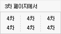
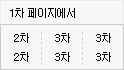

{ #layout_header }	

<script type="text/javascript" src="/app/javascript/plugin/editor/js/editor_loader.js"></script>
<script type="text/javascript" src="/app/javascript/plugin/editor/js/daum_editor_loader.js?dummy={=date('YmdH')}"></script>
<script type="text/javascript">
	function formMove(gb, no){
		classCont(no);
		set_resize_iframe(false);
		$(".formDivisionContainer").hide();
		$(".formDivisionContainer[gb='"+gb+"']").show();
	}

	function classCont(no){
		$(".mtabon-left").addClass("mtab-left");
		$(".mtabon").addClass("mtab");
		$(".mtabon-right").addClass("mtab-right");
		$(".mtabon-left").removeClass("mtabon-left");
		$(".mtabon").removeClass("mtabon");
		$(".mtabon-right").removeClass("mtabon-right");

		$(".tl"+no).addClass("mtabon-left");
		$(".tc"+no).addClass("mtabon");
		$(".tr"+no).addClass("mtabon-right");
	}

	function submitForm(type) {
		openDialogConfirm('실행하시겠습니까?','400','150',function(){
			loadingStart();
			if (type==1) {
				submitEditorForm(document.categoryDesignSettingForm);
			} else if (type==2) {
				$("form[name='categoryRecommendSettingForm']").submit();
			} else if (type==3) {
				$("form[name='categoryNavigationSettingForm']").submit();
			} else if (type==4) {
				$("form[name='categoryCategorySettingForm']").submit();
			}
		});
	}

	function set_resize_iframe(flag){
		height = '2360px';
		if	(flag) height = '5000px';
		$('.goods_display_iframe').css({'height':height});
	}
</script>

<!-- 페이지 타이틀 바 : 시작 -->
<div id="page-title-bar-area">
	<div id="page-title-bar">

		<!-- 타이틀 -->
		<div class="page-title">
			<h2>브랜드 페이지 한꺼번에 꾸미기</h2>
		</div>
		
		<!-- 좌측 버튼 -->
		<ul class="page-buttons-left">
			<li><span class="btn large white"><button type="button" onclick="document.location.href='/admin/brand/catalog';">브랜드 관리로 돌아가기<span class="arrowright"></span></button></span></li>
		</ul>

	</div>
</div>
<!-- 페이지 타이틀 바 : 끝 -->

<!-- 상단 단계 링크 : 시작 -->
<div class="category_decorate">
	<table cellpadding="0" cellspacing="0">
		<tr>
			<td class="mtabon-left tl2"></td>
			<td class="mtabon tc2"><span class="hand" onclick="formMove('design',2);">브랜드 페이지의 디자인 영역</span></td>
			<td class="mtabon-right tr2"></td>
			<td width="5"></td>
			<td class="mtab-left tl3"></td>
			<td class="mtab tc3"><span class="hand" onclick="formMove('recommend',3);">브랜드 페이지의 추천상품 영역</span></td>
			<td class="mtab-right tr3"></td>
			<td width="5"></td>
			<td class="mtab-left tl1"></td>
			<td class="mtab tc1"><span class="hand" onclick="formMove('navigation',1);">브랜드 페이지의 검색 영역</span></td>
			<td class="mtab-right tr1"></td>
			<td width="5"></td>
			<td class="mtab-left tl4"></td>
			<td class="mtab tc4"><span class="hand" onclick="formMove('category',4);">브랜드 페이지의 상품 영역</span></td>
			<td class="mtab-right tr4"></td>
		</tr>
	</table>
	<div class="mtab-bottom"></div>
</div>
<!-- 상단 단계 링크 : 끝 -->

<div class="formDivisionContainer" gb="design">

	<div class="pd10 center">
		[안내] 브랜드 페이지의 디자인 영역은 <a href="#sample_design" class="goSampleImage"><span class="bold red">이 곳</span></a>입니다.
	</div>
	
	<form name="categoryDesignSettingForm" method="post" target="actionFrame" action="../brand_process/batch_design_setting">
	<input type="hidden" name="mode" value="design" />
	
	<div class="pdl10 pdr10">
		<textarea name="top_html" class="daumeditor" contentHeight="150"></textarea>
	</div>
	
	<div class="center pdt30">위의 세팅값을 1차부터 4차까지 전체 브랜드에 적용합니다.</div>
	<div class="center pdt10"><span class="btn large red"><input type="button" value="실행하기 " onclick="submitForm(1);" /></span></div>
	</form>
	
	<div class="pdt30 center">
		<a name="sample_design"></a>
		↓ 아래 이미지는 브랜드 페이지의 영역 안내를 위한 샘플입니다.<br />
		
	</div>
</div>
<div class="formDivisionContainer hide" gb="recommend">

	<div class="pd10 center">
		[안내] 브랜드 페이지의 추천상품 영역은 <a href="#sample_recommend" class="goSampleImage"><span class="bold red">이 곳</span></a>입니다.
	</div>
	
	<form name="categoryRecommendSettingForm" method="post" target="actionFrame" action="../brand_process/batch_design_setting">
	<input type="hidden" name="mode" value="recommend" />
	<iframe class="goods_display_iframe" src="/admin/design/display_edit?kind=brand_recommend&sub_kind=batch&popup=1" frameborder="0" style="width:100%;height:2360px"></iframe>	
	</form>
	
	<div class="pdt30 center">
		<a name="sample_navigation"></a>
		↓ 아래 이미지는 브랜드 페이지의 영역 안내를 위한 샘플입니다.<br />
		
	</div>
	
</div>
<div class="formDivisionContainer hide" gb="navigation">

	<div class="pd10 center">
		[안내] 브랜드 페이지의 검색 영역은 <a href="#sample_navigation" class="goSampleImage"><span class="bold red">이 곳</span></a>입니다.
	</div>
	
	<form name="categoryNavigationSettingForm" method="post" target="actionFrame" action="../brand_process/batch_design_setting">
	<input type="hidden" name="mode" value="navigation" />
	<table width="100%" class="info-table-style">
	<col width="160" />
	<tr>
		<th class="its-th">브랜드 페이지<br />네비게이션에서<br />해당 브랜드</th>
		<td class="its-td">
		
			<div class="pd5"></div>
			
			<div><label><input type="radio" name="navigation_depth" value="single" checked="checked"/> 현재 차수의 다음 차수만 보여줌. 단, 하위가 없을 경우 현재 차수를 보여줌</label></div>
			<table border="0" cellpadding="0" cellspacing="5">
			<tr>
				<td align="center">
					<br />
					가로 <input type="text" name="navigation_single_w[]" value="4" size="2" maxlength="2" />개
				</td>
				<td width="20"></td>
				<td align="center">
					<br />
					가로 <input type="text" name="navigation_single_w[]" value="4" size="2" maxlength="2" />개
				</td>
				<td width="20"></td>
				<td align="center">
					<br />
					가로 <input type="text" name="navigation_single_w[]" value="4" size="2" maxlength="2" />개
				</td>
				<td width="20"></td>
				<td align="center">
					<br />
					가로 <input type="text" name="navigation_single_w[]" value="4" size="2" maxlength="2" />개
				</td>
			</tr>
			</table>
			
			<div class="pd10"></div>
			
			<div><label><input type="radio" name="navigation_depth" value="double" /> 현재 차수의 다음 차수와 다다음 차수를 보여줌. 단, 하위가 없을 경우 현재 차수를 보여줌</label></div>
			<table border="0" cellpadding="0" cellspacing="5">
			<tr>
				<td align="center">
					<br />
					가로 <input type="text" name="navigation_double_w[]" value="4" size="2" maxlength="2" />개
				</td>
				<td width="20"></td>
				<td align="center">
					<br />
					가로 <input type="text" name="navigation_double_w[]" value="4" size="2" maxlength="2" />개
				</td>
				<td width="20"></td>
				<td align="center">
					<br />
					가로 <input type="text" name="navigation_double_w[]" value="4" size="2" maxlength="2" />개
				</td>
				<td width="20"></td>
				<td align="center">
					<br />
					가로 <input type="text" name="navigation_double_w[]" value="4" size="2" maxlength="2" />개
				</td>
			</tr>
			</table>
			
			<div class="pd10"></div>
		</td>
	</tr>
	</table>
	
	<div class="center pdt30">위의 세팅값을 1차부터 4차까지 전체 브랜드에 적용합니다.</div>
	<div class="center pdt10"><span class="btn large red"><input type="button" value="실행하기 " onclick="submitForm('3');" /></span></div>
	</form>
	
	<div class="pdt30 center">
		<a name="sample_navigation"></a>
		↓ 아래 이미지는 카테고리 페이지의 영역 안내를 위한 샘플입니다.<br />
		
	</div>
	
</div>
<div class="formDivisionContainer hide" gb="category">

	<div class="pd10 center">
		[안내] 브랜드 페이지의 상품 영역은 <a href="#sample_category" class="goSampleImage"><span class="bold red">이 곳</span></a>입니다.
	</div>
	
	<form name="categoryCategorySettingForm" method="post" target="actionFrame" action="../brand_process/batch_design_setting">
	<input type="hidden" name="mode" value="category" />
	<iframe class="goods_display_iframe" src="/admin/design/display_edit?kind=brand&sub_kind=batch&popup=1" frameborder="0" style="width:100%;height:2360px"></iframe>	
	</form>
	
	<div class="pdt30 center">
		↓ 아래 이미지는 브랜드 페이지의 영역 안내를 위한 샘플입니다.<br />
		
		<a name="sample_category"></a>
	</div>
</div>
{ #layout_footer }